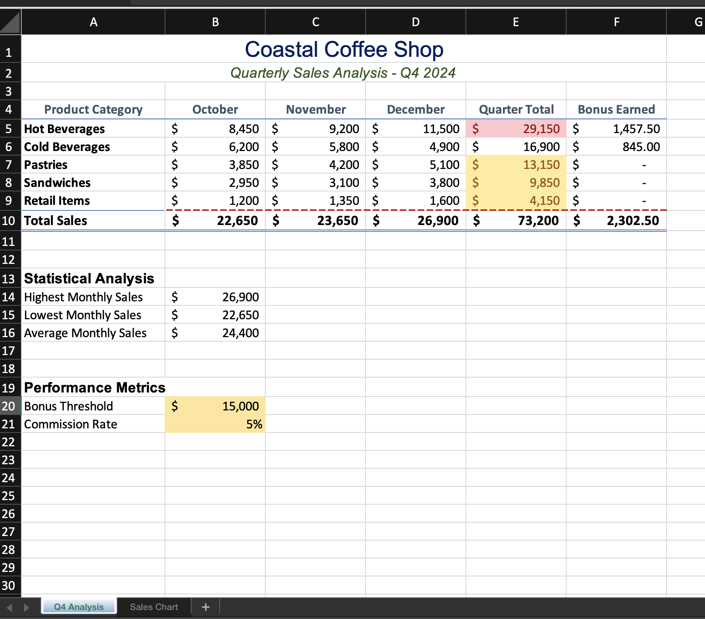
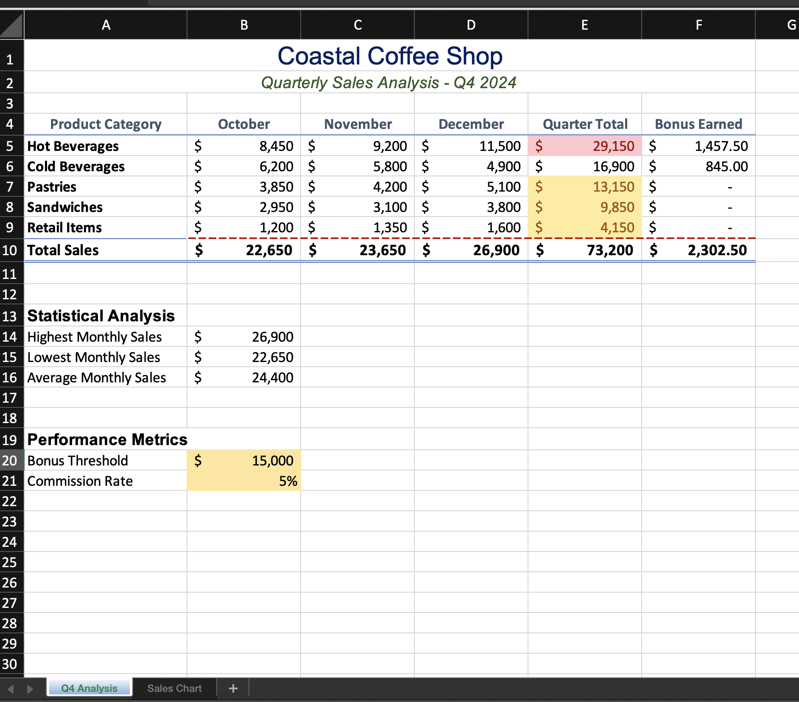
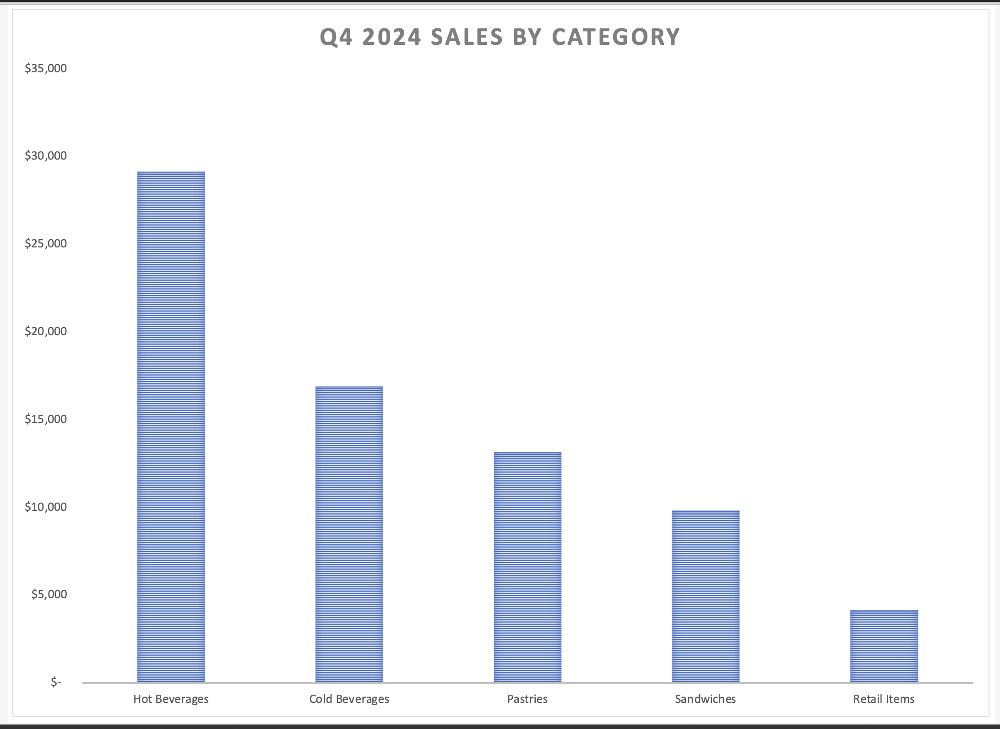
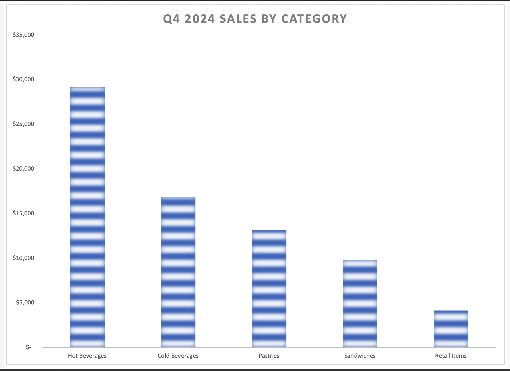

CSC 104: Computers and Computer Applications | Time Allowed: 90 minutes | Total Points: 100
Scenario
You are the assistant manager at Coastal Coffee Shop, a local café that has been in business for three years. The owner has asked you to create a comprehensive quarterly sales analysis for Q4 2024 (October through December). You have been provided with a starter Excel file containing the monthly sales data by product category. Your task is to complete the analysis by adding formulas, formatting, and visualizations to help the owner make informed business decisions.
Learning Objectives
- Demonstrate proficiency in creating and copying Excel formulas
- Apply appropriate number formatting and cell styles
- Use statistical functions (SUM, AVERAGE, MAX, MIN)
- Implement conditional logic using the IF function
- Apply conditional formatting to highlight key data
- Create and format professional charts
- Prepare worksheets for professional printing
Required Files
- Starter File: coastal_coffee_starter.xlsx
- Submission File: LastName_FirstName_Coffee.xlsx
Assignment Instructions
Complete ALL tasks below. Read each instruction carefully before proceeding.
PART 1: Worksheet Title Formatting (8 points)
Set your color theme to “Office 2013-2022”
Merge cells A1 through F1 and center the title "Coastal Coffee Shop"
Format the title with Font: Arial Black, Size: 18pt, Color: Dark Blue
Merge cells A2 through F2 and center the subtitle
Format the subtitle with Font: Arial, Size: 12pt, Color: Green Accent 6 Darker 50%, Style: Italic
PART 2: Column Headers and Data Formatting (10 points)
Apply the "Heading 3" cell style to the range A4:F4 (column headers)
Center align all column headers
Format all sales data (B5:D9) with Accounting Number Format, 0 decimal places
Bold the product category names in column A (A5:A9)
PART 3: Formulas - Quarter Total (12 points)
In cell E5, create a formula to calculate the Quarter Total for Hot Beverages (sum of October, November, and December)
Copy this formula down through E9 for all product categories
Format column E (E5:E9) with Accounting Number Format, 0 decimal places
In cell E10, create a formula to sum all Quarter Totals (E5:E9)
PART 4: Formulas - Bonus Calculation (15 points)
The owner offers a bonus to product categories that exceed $15,000 in quarterly sales. The bonus is 5% of the quarter total. These values are stored in cells B20 and B21.
In cell F5, create an IF formula that: Awards a bonus (Quarter Total * $B$21) if the Quarter Total >= $B$20, Otherwise displays 0
Use absolute cell references for B20 and B21 so the formula can be copied
Copy the formula from F5 down through F9
Format column F (F5:F9) with Accounting Number Format, 2 decimal places
In cell F10, create a SUM formula to total all bonuses earned
PART 5: Total Row Formatting (8 points)
Apply the "Total" cell style to the range A10:F10
Add a top border (your choice of style) to cells B10:F10
Ensure all values in row 10 display with appropriate number formatting
PART 6: Statistical Analysis (12 points)
Format cell A13 with Font: Arial, Size: 12pt, Bold
In cell B14, use the MAX function to find the highest value among the three monthly totals (you'll need to create formulas in row 10 for B10, C10, and D10 first)
In cell B15, use the MIN function to find the lowest monthly total
In cell B16, use the AVERAGE function to calculate the average monthly total
Format cells B14:B16 with Accounting Number Format, 0 decimal places
Note: You will need to create SUM formulas in cells B10, C10, and D10 to calculate monthly totals before you can find the MAX, MIN, and AVERAGE of these values.
PART 7: Conditional Formatting (10 points)
Apply conditional formatting to the Quarter Total column (E5:E9) to highlight values greater than $20,000 with a Light Red Fill and Dark Red Text
Apply a different conditional format to the same range to highlight values less than $15,000 with a Yellow Fill
PART 8: Performance Metrics Formatting (5 points)
Format cell A19 with Font: Arial, Size: 12pt, Bold
Format cell B20 with Accounting Number Format, 0 decimal places
Format cell B21 as Percentage with 0 decimal places (it should display as 5%)
Apply a Gold, Accent 4, Lighter 60% Fill to cells B20:B21
PART 9: Chart Creation (15 points)
Create a Column Chart showing the Quarter Total for each product category
Use the data range A4:A9 and E4:E9 (Product Categories and Quarter Totals)
Move the chart to a new sheet named "Sales Chart"
Add the chart title: "Q4 2024 Sales by Category"
Apply Chart Style 3 (or any professional style of your choice)
Ensure the chart is easy to read with appropriate sizing
PART 10: Sheet Management and Printing (5 points)
Rename the main data sheet tab to "Q4 Analysis"
Change the "Q4 Analysis" sheet tab color to Blue
Set up the "Q4 Analysis" sheet to print in Landscape orientation
Ensure all data fits on one page when printed (use Print Preview to verify)
Example Completed Sheets
These images show what your completed project should look like. Use them as a reference while working through the assignment.
Q4 Analysis Worksheet (Example):


Sales Chart Worksheet (Example):


Submission Requirements
- Save your completed workbook as: LastName_FirstName_Coffee.xlsx
- Ensure both sheets ("Q4 Analysis" and "Sales Chart") are included in your submission
- Verify all formulas are working correctly before submitting
- Double-check that your file opens properly and displays all formatting
- Submit your file through the course learning management system by the deadline
Tips for Success
- Save your work frequently throughout the assignment
- Use Print Preview to check your formatting before final submission
- Test your formulas by changing some numbers to verify they recalculate correctly
- Pay attention to absolute vs. relative cell references in the bonus formula
- Remember: formulas should calculate values, not hardcode numbers
- If you get stuck, refer to your course materials or textbook examples